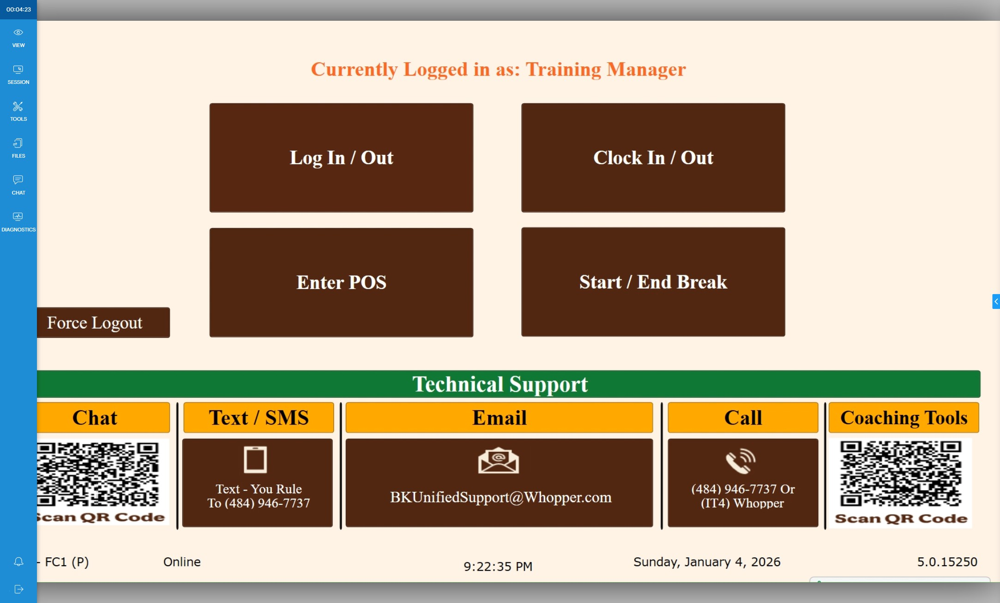
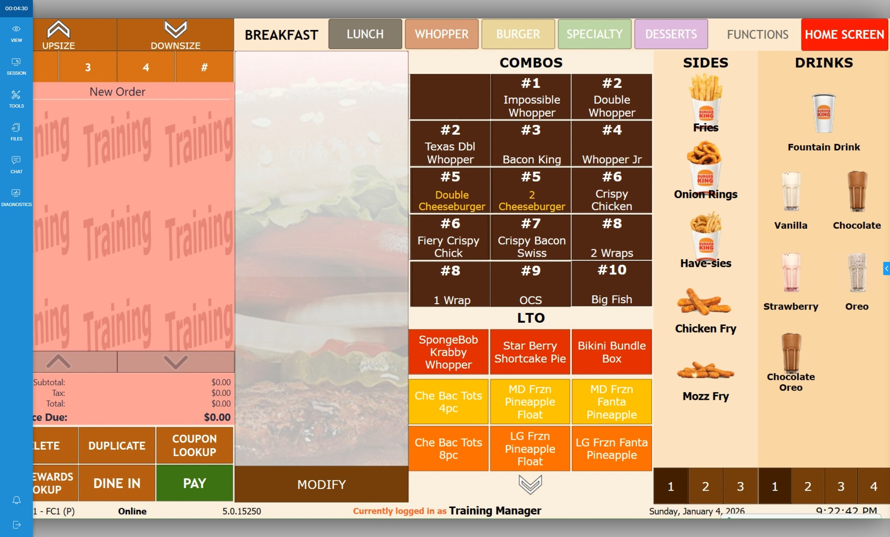
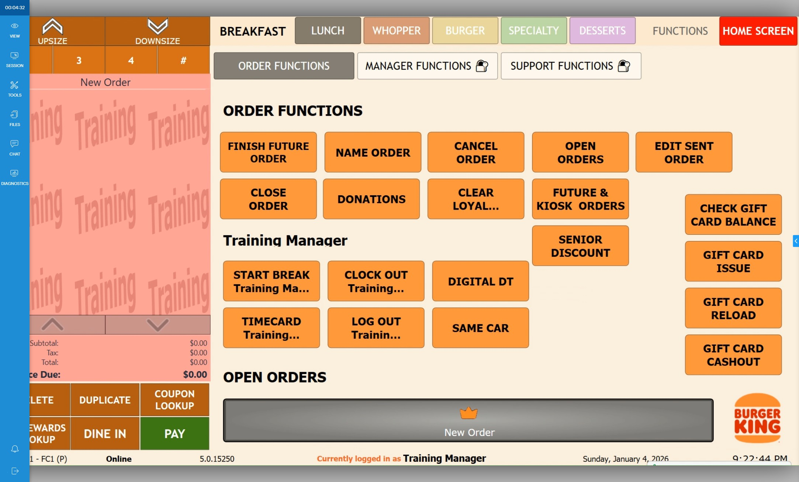
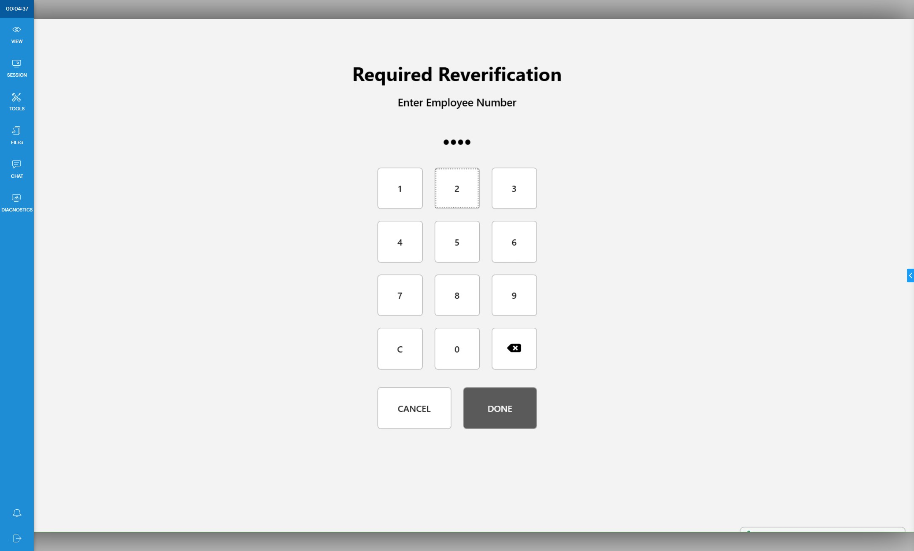
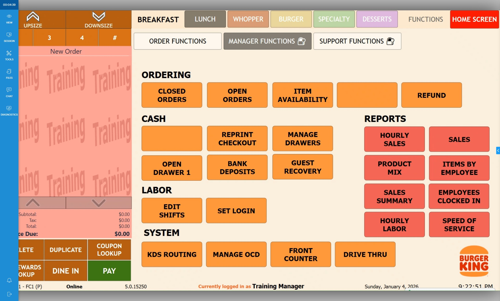
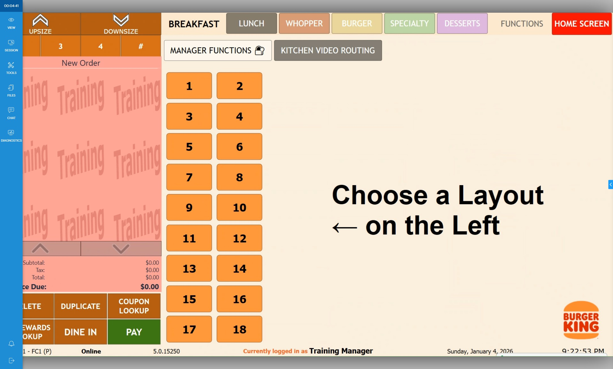
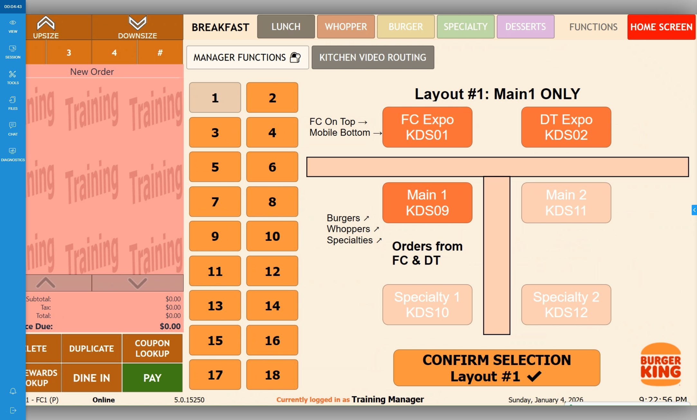
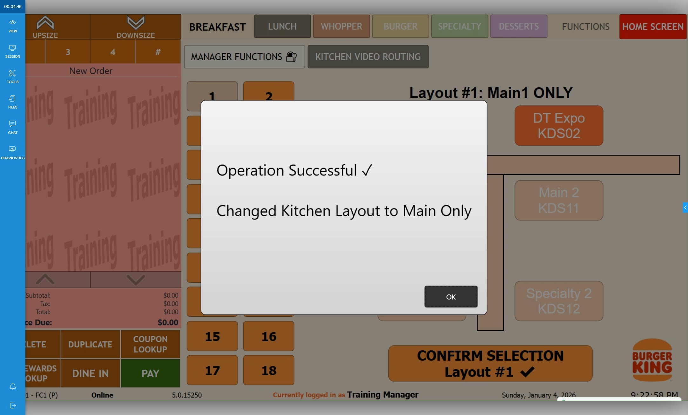

-
1Click "Enter POS"

-
2Click "Functions"

-
3Click "Manager Functions"

-
4Slide card or enter PIN

-
5Click "KDS Routing"

-
6Select which routing you want.

-
Tip
When you select the number, the layout of the KDS will be displayed.
-
7Click "Confirm Selection"

-
8Click "OK"

Rerouting Printers
-
9Navigate to: Rerouting Printers to adjust your printers after adjusting your KDS.